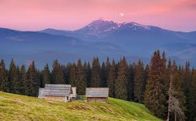

Визначні місця України
Україна славиться своєю природною красою та історичними пам’ятками. Серед найвідоміших місць:
- Карпати — мальовничі гори на заході країни;
- Києво-Печерська Лавра — духовний центр православ’я;
- Софійський собор у Києві — пам’ятка архітектури XI ст.;
- Острів Хортиця — історичне місце Запорізької Січі.

⬅ Назад